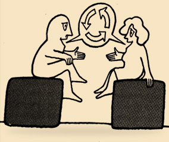
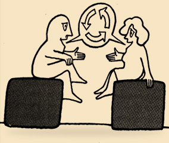

Heb het gehele jaar contact met je medewerker
En daarmee bedoelen we géén mailwisseling!!
wat ga je daarmee doen?
En daarmee bedoelen we géén mailwisseling!!
Je doet het immers niet voor P&O of de organisatie, maar omdat je als leidinggevende er zelf iets mee wilt bereiken of wilt voorkomen!